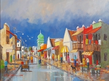
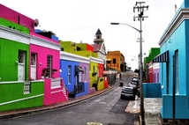
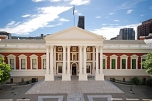

Paris also commonly known as the city of lights or love. Paris is ranked amongst one of the top tourist destinations to visit. The Eiffel Tower being one of the most iconic man made structures in the world. I would really love to get to know the city as well as discover the French culutre and cuisine.
| French | English |
|---|---|
| Coûter les yeux de la tête. | Literally means that something costs the eyes in your head it’s a price that’s unreasonable. The English equivalent is ‘to cost an arm and a leg’. |
| Ne rien savoir faire de ses dix doigts. | Literally means not knowing how to do anything with one’s ten fingers. It means that somebody is completely useless. |
| Arriver comme un cheveu sur la soupe. | Literally means to arrive like the hair in a soup. It refers to entering a situation at the most awkward moment possible. |
District Six was named the Sixth Municipal District of Cape Town in 1867. It was established as a mixed community of freed slaves, merchants, artisans, labourers and immigrants.
Bo Kaap situated in the heart of Cape Town CBD shows the cultural diversity to found in the Cape
The Parliament of South Africa is South Africa's legislature and under the country's current Constitution is composed of the National Assembly and the National Council of Provinces.
